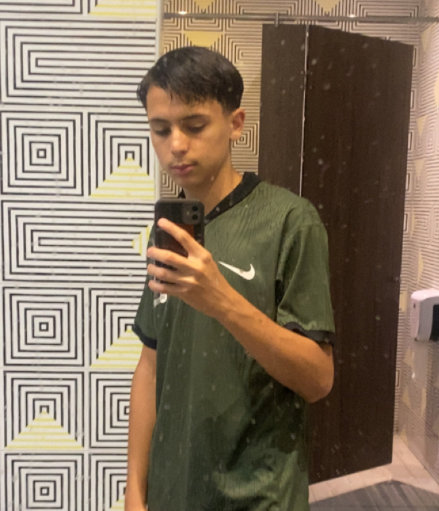
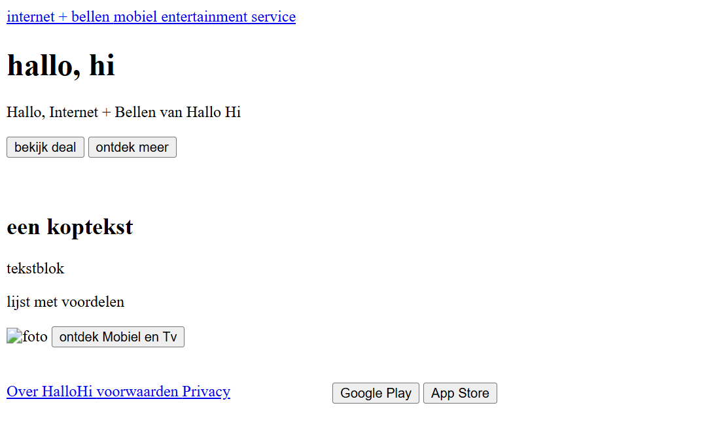
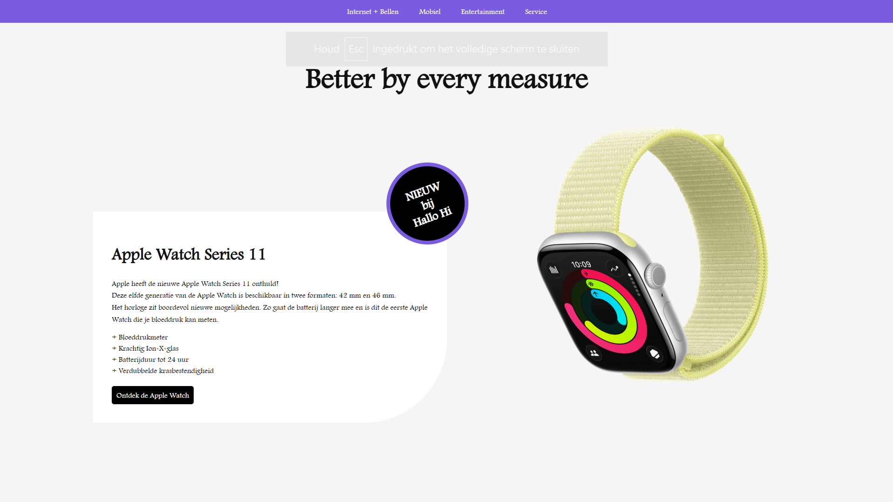

Student Software Developer - SOD 1B
Hallo, ik ben Youssef!
Een beginnende Software Developer.
Ik ben Youssef en ik volg de opleiding Software Developer. Ik ben nog een beginner en leer stap voor stap hoe ik websites kan bouwen met HTML en CSS.
Meer over mij
Over mij
Mijn naam is Youssef. Ik volg de opleiding Software Development in klas SOD 1B. Ik ben geïnteresseerd in computers en technologie.
Ik ben nog aan het leren programmeren. Ik wil mezelf verbeteren en later zelfstandig websites en programma's kunnen maken.
Mijn gegevens
- Naam: Youssef
- Opleiding: Software Developer
- Klas: SOD 1B
- Ervaring: Beginner
Wat ik leer
HTML
HTML gebruik ik om de structuur van een website te maken.
CSS
CSS gebruik ik om mijn website kleuren, lettertypes en een mooie opmaak te geven.
Mijn projecten
Hier laat ik mijn schoolopdrachten en projecten zien. Omdat ik nog beginner ben, wil ik hier in de toekomst meer projecten toevoegen.
Project 1 - Mijn eerste website

Mijn eerste website gemaakt met HTML.
Project 2 - CSS oefenen

Een website waarbij ik CSS heb gebruikt.
Interview met een klasgenoot
Voor mijn opleiding heb ik een klasgenoot geïnterviewd over de keuze voor Software Development.
Naam klasgenoot: Benyamin
- Waarom heb je gekozen voor Software Development?
- Wat vind je het leukste aan deze opleiding?
- Wat vind je het moeilijkste aan programmeren?
- Welke programmeertaal wil je graag leren?
- Wat wil je later worden?
Naam klasgenoot: Benyamin
Antwoorden:
1.
Omdat ik het leuk vind om met computers te werken en zelf websites en games te maken.
2.
Dat je zelf dingen kunt maken en creatief bezig bent met programmeren.
3.
Soms vind ik het lastig als mijn code niet werkt en ik niet weet waar de fout zit.
4.
Ik wil graag JavaScript leren, omdat je daarmee websites interactief kunt maken.
5.
Ik wil later software developer worden en mijn eigen projecten kunnen maken.
Mijn video
Hieronder kun je mijn gekozen video bekijken.
Contact
Wil je contact met mij opnemen? Vul dan het formulier hieronder in.
Mijn leerdoelen
| Onderwerp | Wat wil ik leren? | Status |
|---|---|---|
| HTML | Websites bouwen | Bezig |
| CSS | Websites vormgeven | Bezig |
| JavaScript | Interactieve websites maken | Later |